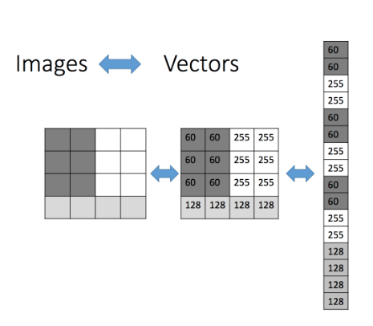

About Learning I
Big Picture
To automatically discover regularities in data through the use of computer algorithms and with the use of these regularities to take actions such as classifying the data into different categories.
The “problem setting” of statistical learning.
The basic setting of statistical learning is: given a problem statement, we want to find prediction model which estimate has best fit in providing solutions to the problem, using data at hand (in sample data) which has the Lowest Variance and Lowest Bias when applied to the data at hand as well as to the data not in hand (unseen data).
Problem statement
Problem statement must be made in probability statement(s).
Given a data, can we test whether our statement is : TRUE or FALSE.
e.g. Given an image cheque whose size is 1264x616 pixel, is image Standard Charted cheque or not?
e.g. Given a 3 bedroom apartment in Kelana Jaya, will the resale price be between RM1,400/sqf and below RM1500/sqf?
e.g. Given 4 to 5 parameter of atmospheric reading in Petaling Jaya, what is the chance of raining the next 3 hours?
All these statements are probability statements, which answers will be TRUE or FALSE; but the answer will always be in terms of probability.
e.g. The probability of a image cheque whose size is 1264x616 pixel is image Standard Charted cheque is 43%. The probability for the resale price of the said apartment in the range will be 91.3%. The probability of raining in Petaling Jaya for the coming 3 hours is 63.5%.
Statistical Modelling
From a statistical learning point-of-view:
\[ Y = f(\bf{X}) + \epsilon \] where \({X}\) is input variable:
\[ X = (X_1,X_2,...,X_p) \] and \(\epsilon\) is noise.
The task is to get prediction/estimation of:
\[ \hat{Y} = \hat{f}(\bf{X}) + \hat{\epsilon} \] The task is then relegated to error estimator, by defining Loss function:
\[ Error(x) = E[(Y−\hat{f}(\bf{X}))^2] \]

A loss function, also known as a cost function, is a method used to estimate the discrepancies between the actual and predicted values in a machine learning model. It provides a measure of how well the model is performing.
noise in data refers to unwanted modifications introduced to a source signal during the capture, storage, transmission, or processing of its information.
How to Learn ?
Data representation

Before learning, data at hand must be representing in vector (e.g. Figure 2 & Figure 3)

But wait, how about textual data ?

The “learning”
Imagine you have a set of data. In order to have good estimated model, we have to split data at hand into:
Training set: This is the largest part in terms of the size of the dataset.
Validation set: model training process is not a one-time process (highly iterative process). We have to train multiple models by trying different combinations of parameters (complexity). Then, we evaluate the performance of each model on the validation set.
Test set: this is use after the training to evaluate performance of the model via un-seen data

- What do we want? \(\Longrightarrow\) To make predictions on unseen data \(\Longrightarrow\) We want a model that generalizes well \(\Longrightarrow\) generalizes to unseen data
- How we will do this? \(\Longrightarrow\) controlling the complexity of the model (learning parameter)
- How do we know if our model generalizes? \(\Longrightarrow\) evaluating on test data.


Learning is NOT memorization! The ability to produce correct outputs on previously unseen inputs is called generalization
How much data?
To “learn” and achieve good generalization, how much data do we need?

Figure 9 showed the effect of training data size on medical classification problem. From that report (see learning curve), learning classifier needs a training data set per class of 4092 to reach the desired accuracy, 99.5%.

In contrast, Figure 10 showed the effect of training data size on cifar-10 images problem. From that report (see learning curve), learning classifier needs a training data set per class of 6000 to reach the desired accuracy of above 90%.

And for Figure 11 is the famous Yolo object detection classifier where number of images per category is recommended around ≥ 1500.
“To answer the “how much data is enough” question, it’s absolutely true that no machine learning expert can predict how much data is needed. The only way to find out out is to set a hypothesis and to test it on a real case.” — Maksym Tatariants
References:
Vijay Kotu and Bala Deshpande, Data Science Concepts and Practice, 2nd Ed., Elsevier Inc, 2019.
Bishop, C. M., Pattern Recognition and Machine Learning, Springer, 2006
Wan Hasni, MD Labs Data Science Lecture Series, Techna-X, 2020
Scott Fortmann-Roe, Understanding the Bias-Variance Tradeoff, 2012
Machine Learning for Intelligent Systems: Bias-Variance Tradeoff
Question?
- What is learning? What does it mean for a computer to learn?
- The big question of Learning Theory (and practice): how to get good generalization with a limited number of examples?